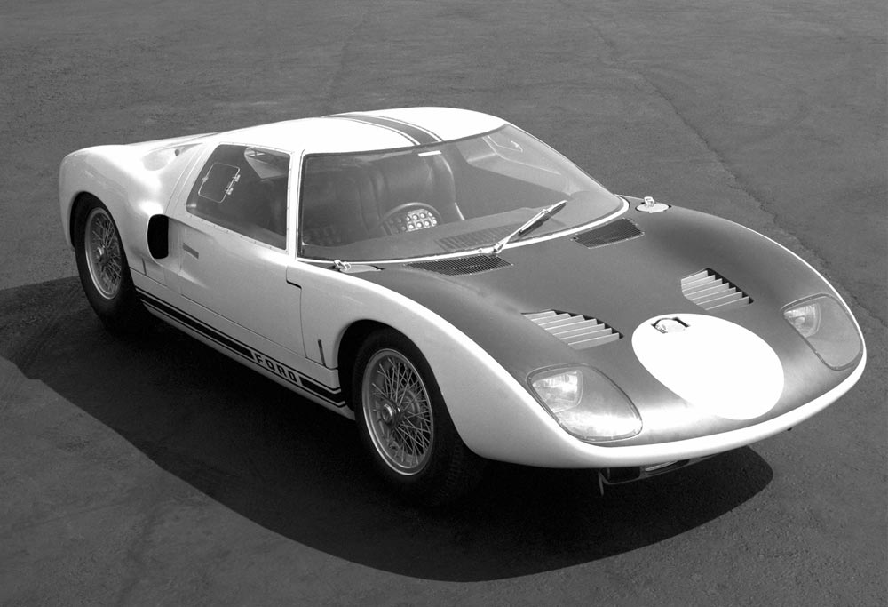

La historia del Ford GT40 es la historia de un desengaño. A comienzos de los años 60, Henry Ford II tenía muchas ganas de participar en una carrera de ámbito histórico y relevancia mundial y puso los ojos sobre las 24 Horas de Le Mans, la carrera de resistencia más importante de la historia. Quería participar pero no tenía ni el bagaje ni los conocimientos necesarios para poder participar en ella con posibilidades, así que decidió que debía buscar un socio a la altura.
A comienzos de los sesenta empezó a sonar un rumor: Ford podría estar detrás de Ferrari. Enzo estaba sufriendo algunas dificultades financieras y la marca americana incluso elaboró ciertas auditorías para determinar el valor y los activos de Ferrari de cara a una posible venta. Había una comunicación total y todo parecía indicar que podría ser así: Ford conseguía una empresa especializada en competición y con un alto nivel de tecnología, mientras que Ferrari podría seguir fabricando sus espectaculares coches de calle con tranquilidad financiera.
Pero finalmente Enzo Ferrari recapacitó y dijo que prefería mantener la independencia de un gran grupo extranjero y detuvo el proceso de venta. Henry Ford II, enfurecido, ordenó a su equipo trabajar para poder vencer a Ferrari en la pista. De esta manera, la marca de Detroit empezó a trabajar con marcas que le resultaban más cercanas, como Lotus o Lola, con las que ya colaboraban en distintas competiciones. Lotus en la Indy 500 y Lola utilizó en Le Mans un motor V8 de origen Ford para hacer un gran papel en 1963: su experiencia en esta competición, objetivo principal de Ford, fue determinante para apostar por ellos.
Así pues, Ford formó un equipo de desarrollo formado por gente de Lola y con ingenieros propios, como John Wyer, que había sido fichado por Ford al equipo Aston Martin: se desarrolló un equipo de trabajo en Michigan y la última fase de desarrollo fue en inglaterra. El Ford GT equipaba un propulsor de 4.2 litros por las limitaciones de la normativa de aquella época y fue probado por primera vez en Indianápolis, en 1963.